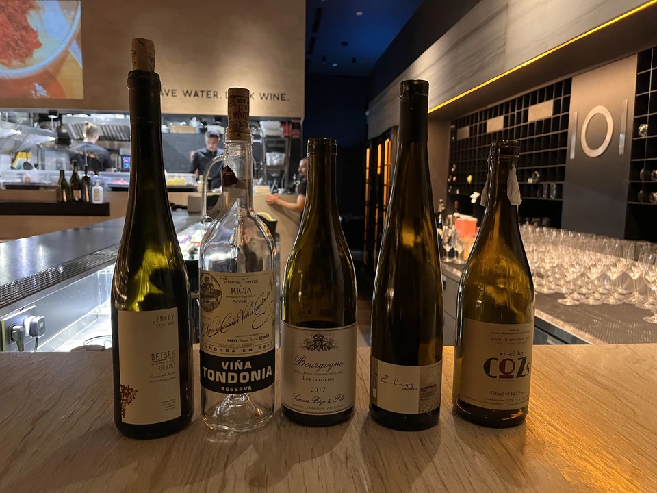

Blind tasting by Vasyl Kalinichenko

Приємно бачити, що Київ оживає. Кожен день все більше і більше людей повертаються додому, тягнучи за собою свої страхи та надії. Людей стало більше на вулиці, в магазинах та в ресторанах. Навіть затори повертаються попри проблеми з бензином. Але найголовніше, повернулися неочікувані і приємні зустрічі.
А там, де люди, там завжди знаходиться місце і радощам. Так от пан Василь Калініченко повернувся до Києва разом з цікавими пляшчинами та твердим наміром продовжити організовувати дегустації. І от 7-ого червня у Барі 101 він зібрав невеличку компанію для того, щоб у сліпу продегустувати наступні вина.
- Lenkey Pinceszet Betsek Korposd Furmint 2011
- Viña Tondonia Blanco Reserva 2009
- Simon Bize et Fils Bourgogne Les Perrières 2017
- J.M Dreyer Elios Pinot Noir 2020
- COZs vn-c2 bg 2017
Заманив він, звісно, самим фактом події. Але ще й заспойлерив дві пляшчини, що він привіз з Європи - старий Фурмінт з Угорщини та білою Тондонією. А далі, мовляв, без подробиць.
Формат цих зустрічей простий. Збираємося, куштуємо по вину, обговорюємо по черзі та ставимо оцінки від 1 до 5 з десятими. В розмовах ділимося враженнями, аналізуємо вино і намагаємося вгадати сортовий склад, походження, вінтаж та виробника. Найголовніше, ніхто окрім організатора не знає, що то за вино ми куштуємо (інколи навіть організатор не знає, дякуючи хлопцям з бару). А в кінці обираємо своїх фаворитів та аутсайдерів. А далі нарешті спокійно їмо та допиваємо недопите.
І от результати з цієї зустрічі. Мусю зізнатися, дуже цікаві!
| Wine #1 | Wine #2 | Wine #3 | Wine #4 | Wine #5 | |
|---|---|---|---|---|---|
| Ельвіра | 4.30 | 4.50 | 3.70 | 4.00 | 3.80 |
| Саша | 3.60 | 4.00 | 3.50 | 4.20 | 3.80 |
| Андрій | 4.10 | 4.50 | 3.20 | 4.60 | 3.60 |
| Вікторія | 4.30 | 4.60 | 4.10 | 4.60 | 4.00 |
| Антон | 4.30 | 4.50 | 4.00 | 4.80 | 3.50 |
| Яна | 4.40 | 3.80 | 4.20 | 4.80 | 3.70 |
| Вася | 4.50 | 4.60 | 4.30 | 4.30 | 3.80 |
| Боря | 4.00 | 4.50 | 4.00 | 3.90 | 3.60 |
| total | sdev | favourite | outcast | price | QPR | |
|---|---|---|---|---|---|---|
| Wine #1 | 33.50 | 0.0711 | 3.00 | 0.00 | 1000.00 | 3.1954 |
| Wine #2 | 35.00 | 0.0794 | 2.00 | 0.00 | 2000.00 | 2.1431 |
| Wine #3 | 31.00 | 0.1244 | 1.00 | 4.00 | 1150.00 | 1.7318 |
| Wine #4 | 35.20 | 0.1075 | 2.00 | 0.00 | 890.00 | 5.0111 |
| Wine #5 | 29.80 | 0.0219 | 0.00 | 4.00 | 1002.00 | 1.5965 |
З очікуваного, закрита Бургундія (позиця #3) зайшла далеко не всім, і розділила титул найменш улюбленого разом з 5-им вином. І весело, що я єдиний, хто назвав його своїм улюбленцем вечора. Варто зазначити, що і для мене, і для Васі Тондонія була поза конкурсом.
Але найцікавішим виявився топ цього вечора. По-перше, найбільшим фаворитом стало перше вино, хоча за оцінкою воно на третьому місці. Це зайвий раз нагадує про різницю між оцінкою і фаворитом. По-друге, Тондонія опинилася на другому місці, її випередив Піно Нуар з Ельзасу! На перше місце за оцінкою вирвалося вино з шикарним балансом між фанковістю, питкістю та зрозумілістю. По-третє, 3 вина так сильно проявили себе, що людям було дійсно складно обрати. А це вже говорить про крутий вибір вин. Вася молодець! Хтось же мав це сказати.
А щодо вгадувань, то це теж було цікаво. Оскільки білі вина певною мірою заспойлерили, то приємно було бачити, що більшість людей легко зрозуміли, хто є хто. Моїх особистих досягнень у вгадуванні було не багато: вгадав, що Тондонія є саме резервою; а також вгадав, що третє вино є Піно Нуаром з Бургундії якогось дуже сильно традиційного винороба. Далі все пішло шкереберть. Але фан свій я отримав.
Завершили вечір неймовірним Сенсо від одного з моїх улюблених виноробів - Sadie Family Pofadder 2020.
Велика подяка Васі, всім хто долучився та рєбятам з Бару 101. Як завжди цікаво, смачно та затишно. Доєднуйтеся до нас наступного разу!
P.S. У Васі є телеграм канал, долучайтеся.